Before (detail)
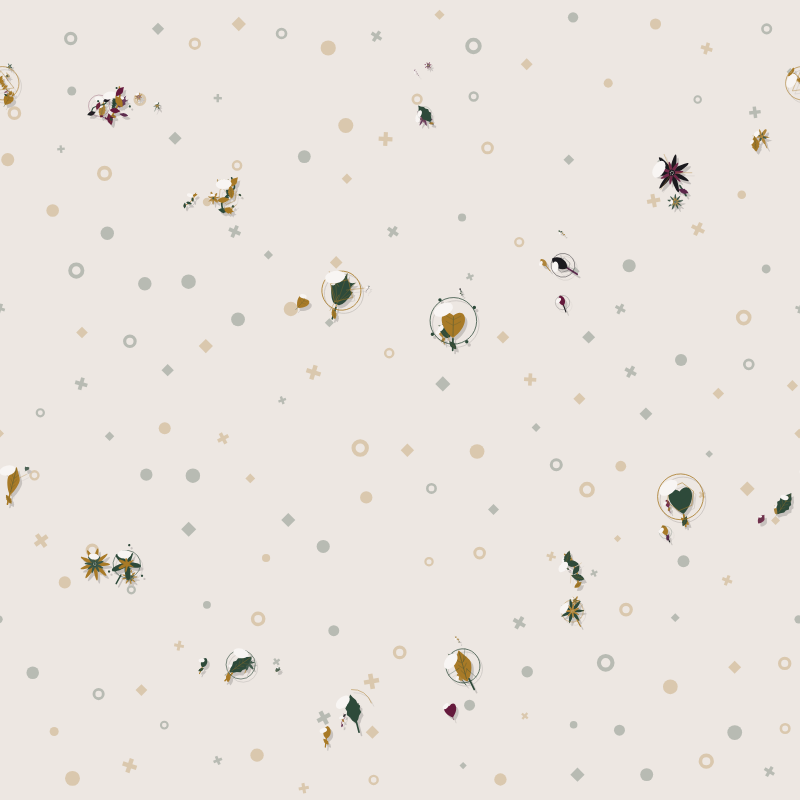
After (detail) — identical
Same fixed (styleId, seed) pairs used by the diagnostic matrix. "Before" rendered from a worktree pinned to commit 525c1d1 (Build 022 final). "After" rendered from this branch. Detail = 800px viewport / thumb = 160px viewport (marketplace thumbnail scale), both at the tile's native viewBox.
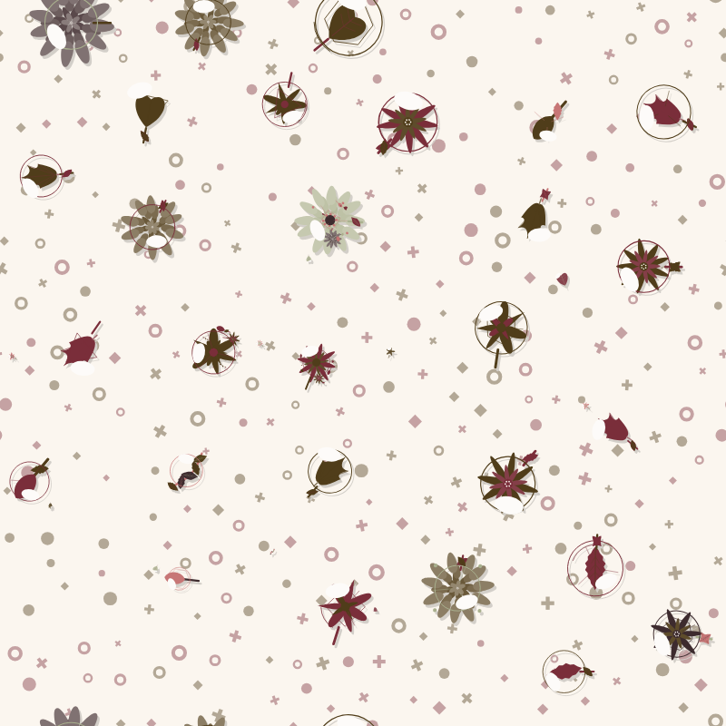
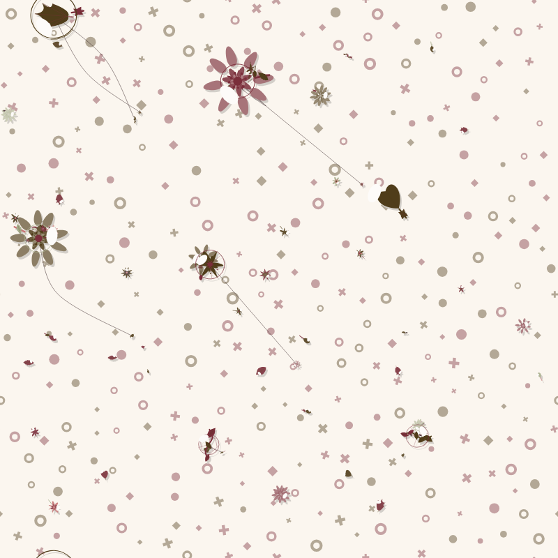
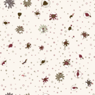
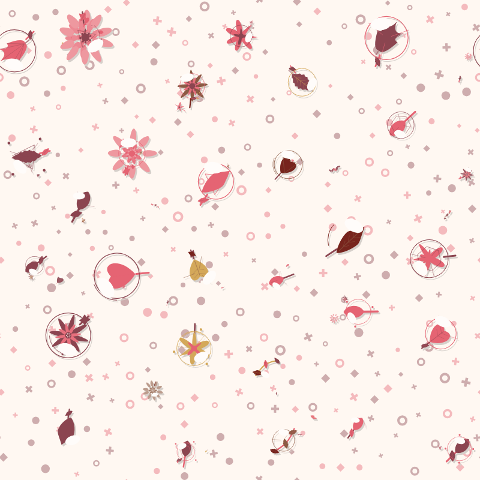
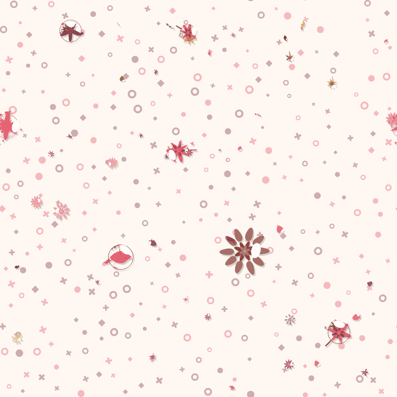
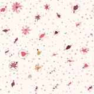
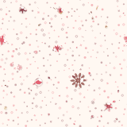
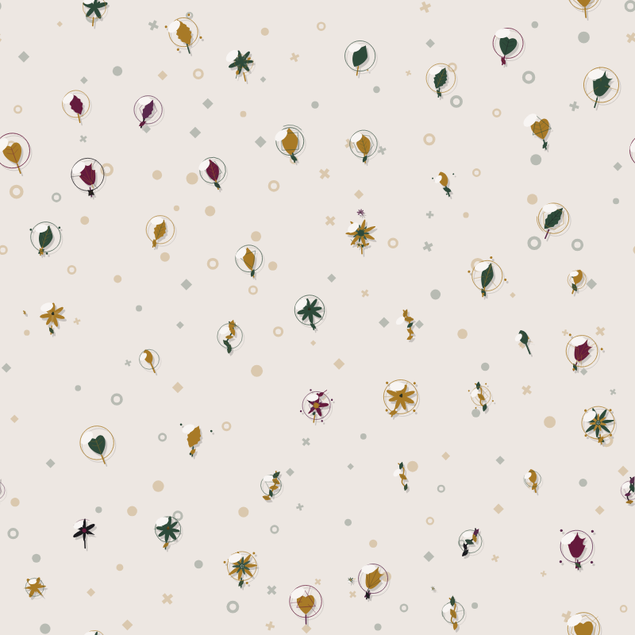
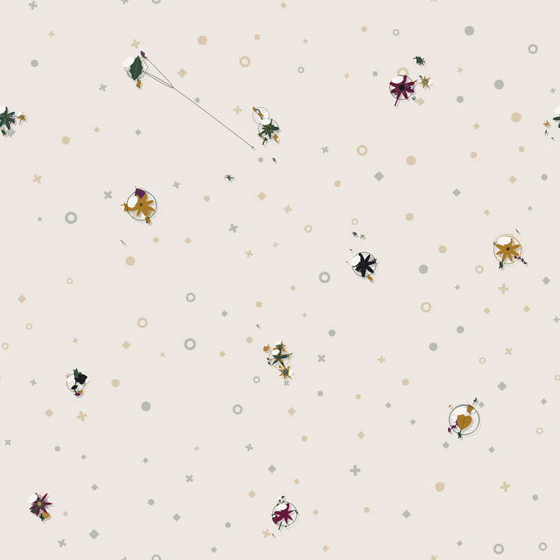
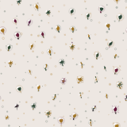
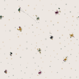

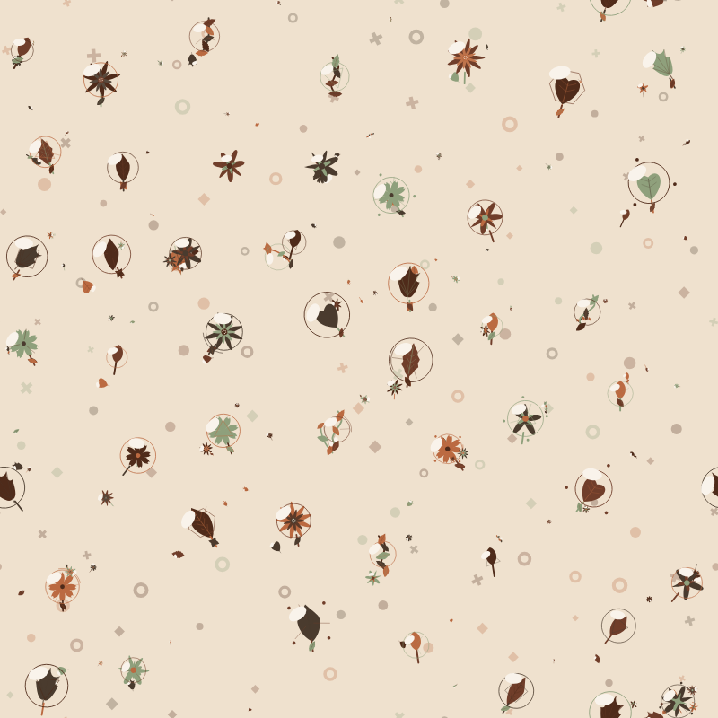
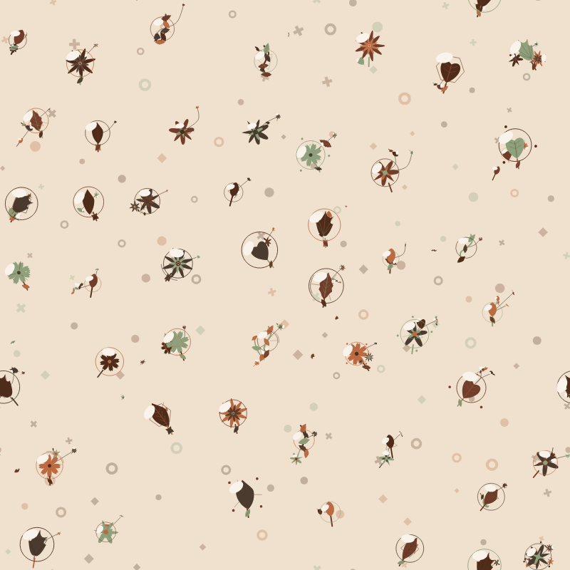
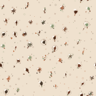
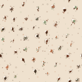

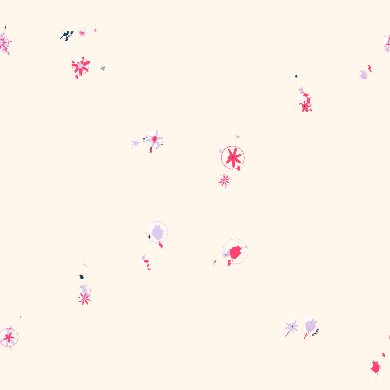